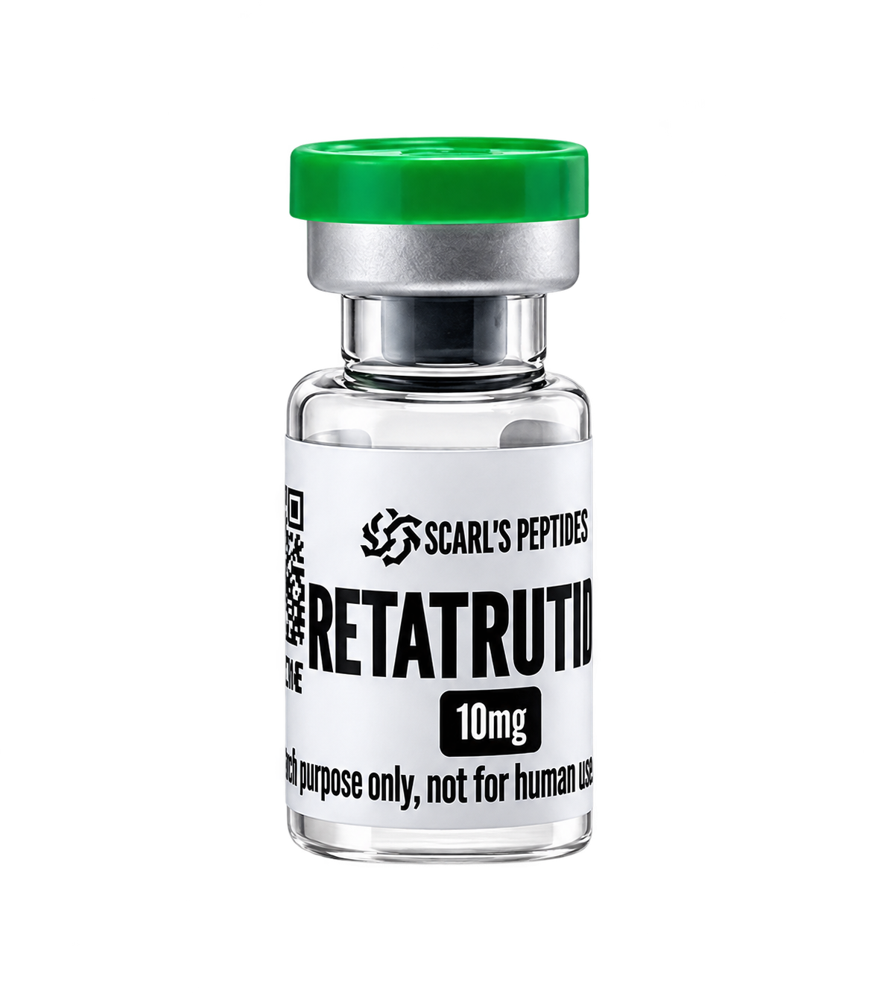

Scarl’s Peptides / Catalogue de recherche
La recherche.Sous un autre angle.
Des références à explorer. Des formats à comparer. Et un échange direct pour toutes vos questions.
Découvrir le catalogueDestiné exclusivement à la recherche.
Sous la lumière01 / 12

RetatrutideRecherche métabolique · 10 mg
↗Glissez sur la fiole pour découvrir les références.
Scarl’s Peptides — Recherche uniquement.Parcourir les références
Dans le catalogue
Quelques points de départ.
Les 12 référencesLe contact, simplement.
Une référence en tête ?
Parlons-en.
Une question sur un format ou la documentation ? Envoyez-nous les références qui vous intéressent sur WhatsApp.
Contacter Scarl’sCadre de recherche
Les références présentées ne sont pas destinées à l’utilisation humaine ou animale. Le catalogue permet de préparer une demande d’information ; aucune commande ni aucun paiement n’est traité sur ce site.